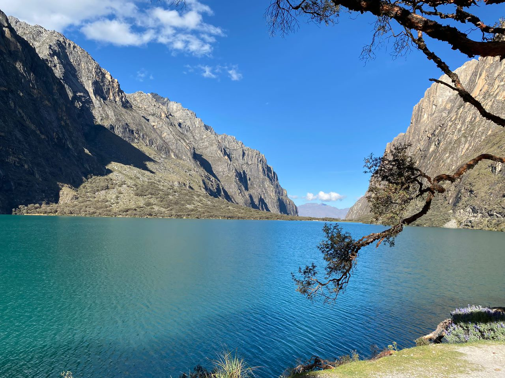

|
 |
הטורקיז הכי יפה בפרו
מדינה: פרו | גובה: 4,604 מטרים לגונת 69 היא אחת הלגונות המפורסמות והיפות ביותר באזור הווארז. המים שלה בצבע טורקיז עז, והיא שוכנת למרגלות הר "צ'אקראראחו" המושלג. הדרך ללגונה כוללת טרק מאתגר של כמה שעות בעלייה, אבל המראה שנחשף בסוף הדרך שווה כל מאמץ. זהו גן עדן אמיתי לחובבי טיולים וטבע. |
|||
|
||||